Додаткові налаштування
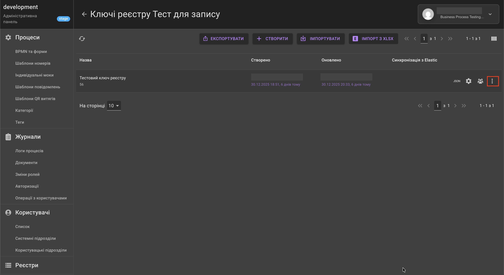
-
Експорт даних в xlsx - це можливість експорту даних у вигляді таблиці XLSX із даними ключа реєстру. 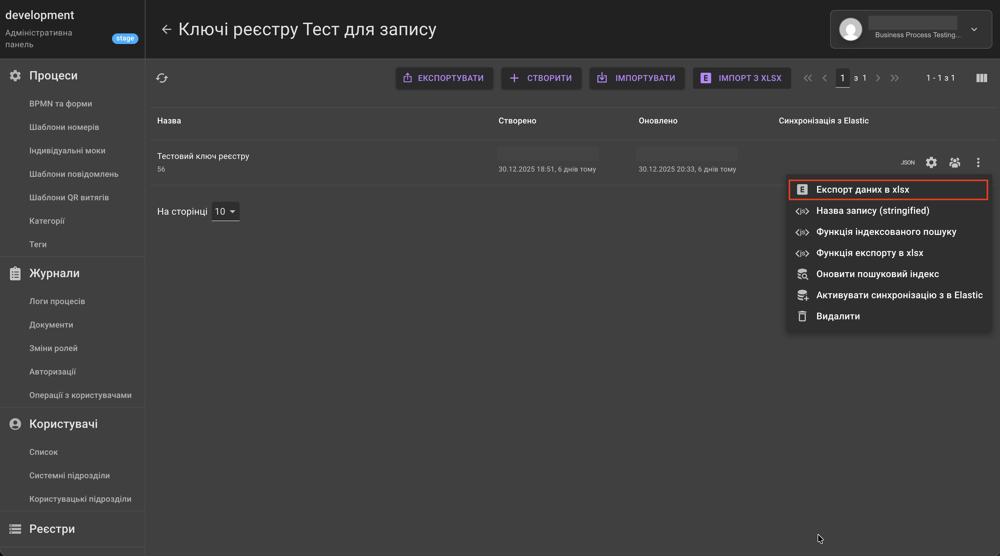
-
Назва запису (stringified) - такий самий функціонал, як і був у Функція toString (JAVASCRIPT).
 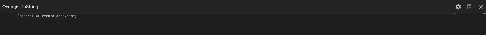
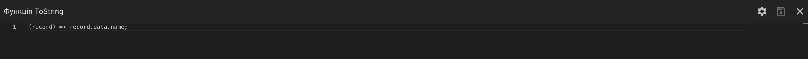 -
Функція індексованого пошуку - такий самий функціонал, як і був у Функція toSearchString (JAVASCRIPT). 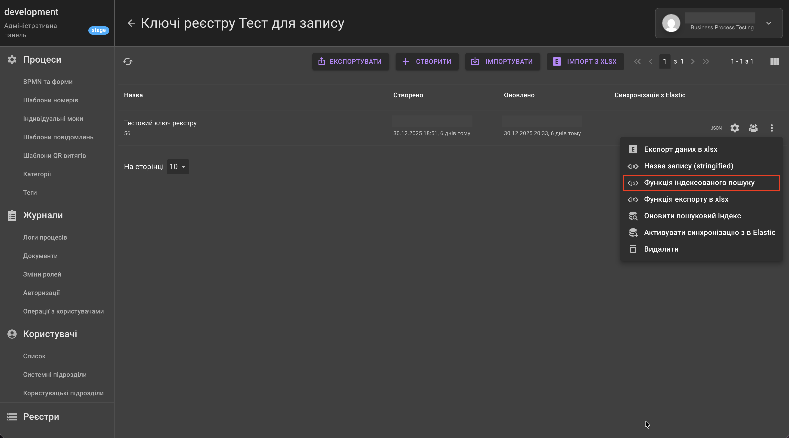 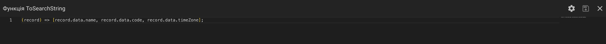
-
Функція експорту в xlsx - це функція, яка дозволяє формувати нову або змінювати існуючу структуру таблиці ключа реєстру для експорту даних у вигляді таблиці XLSX із заповненими даними ключа реєстру.
Застосування:
-
Переходимо в Редагування Схема (JSON) (іконка (JSON)). 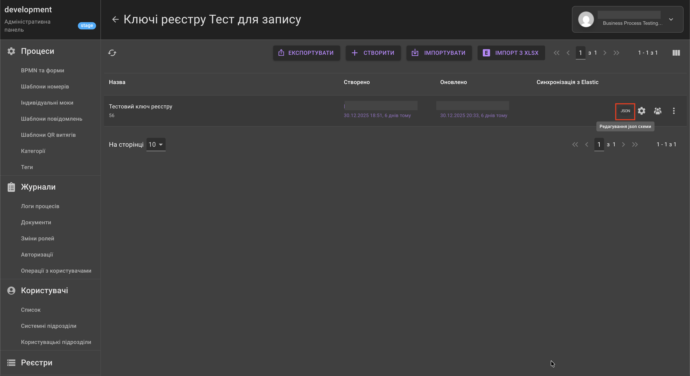
-
У відкритому вікні прописуємо назви колонок в новоствореному масиві toExportColumns. 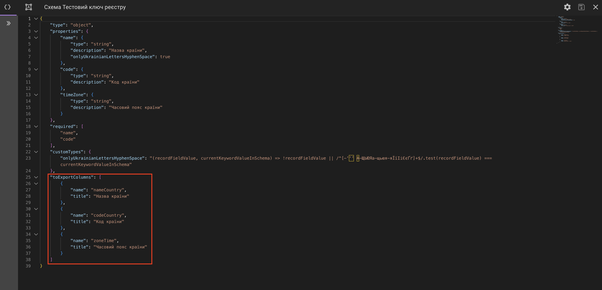 Приклад функції:
{ "type": "object", "properties": { "name": { "type": "string", "description": "Назва країни" }, "code": { "type": "string", "description": "Код країни" }, "timeZone": { "type": "string", "description": "Часовий пояс країни" } }, "required": [ "name", "code" ], "toExportColumns": [ { "name": "nameCountry", "title": "Назва країни" }, { "name": "codeCountry", "title": "Код країни" }, { "name": "zoneTime", "title": "Часовий пояс країни" } ] } -
Зберігаємо зміни натиснувши на іконку дискетки "Зберегти".
-
На сторінці ключа реєстру натискаємо на трикрапку навпроти відповідного ключа реєстру.
-
Із відкритого списку обираємо Функція експорту в xlsx. 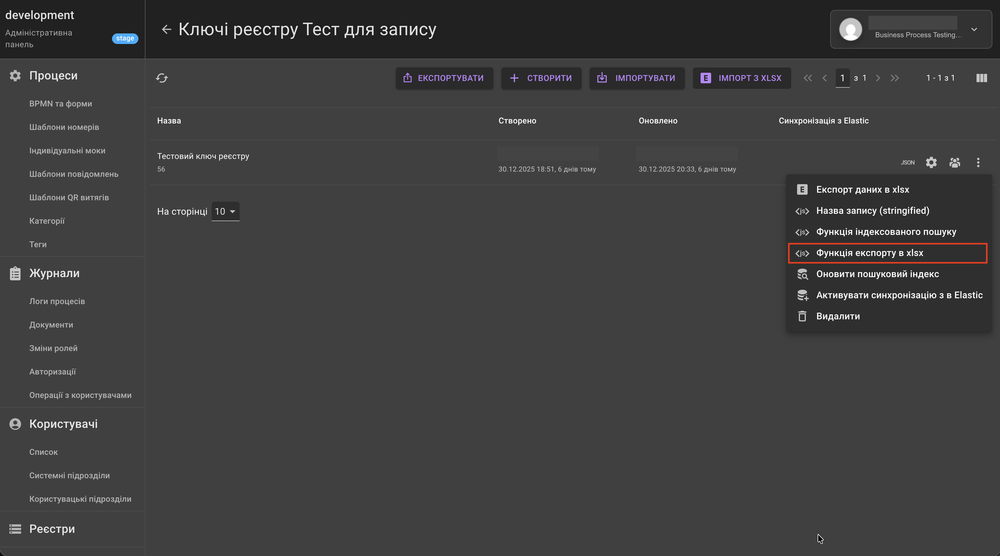
-
У відкритому вікні маємо прописати мапінг даних колонок за новою структурою. Функція підтримує формат javascript, у вигляді стрілкової функції, де є один аргумент record - це обʼєкт (data) даних полів реєстру. 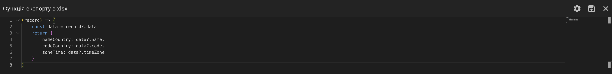 Приклад функції:
-
Після внесених змін натискаємо на іконку дискетки "Зберегти".
-
Для перевірки функціоналу можна скористатись функцією Експорт даних в xlsx або перейшовши до кабінету у визначений ключ реєстру виконати експорт через іконку завантаження "Завантажити". 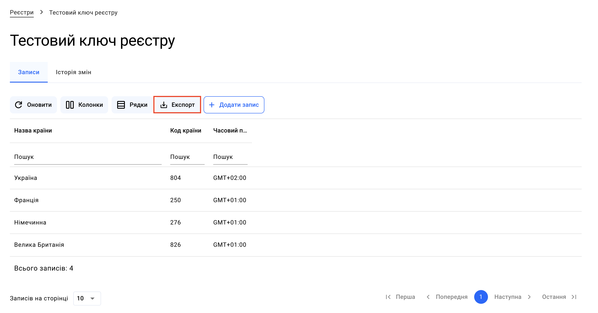
-
-
Оновити пошуковий індекс - функціонал, який дозволяє виконувати реіндексацію записів ключа, якщо змінилась функція індексованого пошуку. Він необхідний для правильного пошуку даних. 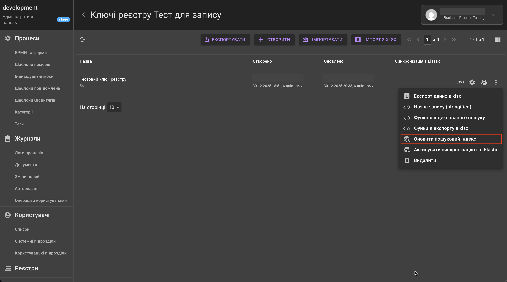
-
Активувати синхронізацію з Elastic - це функціонал, який дозволяє видалення індексу відповідного ключа з elasticsearch та запуск повної реіндексації. В результаті буде створений індекс з усіма записами, що є на цей момент в реєстрі, причому автоматична синхронізація змін продовжує працювати паралельно. 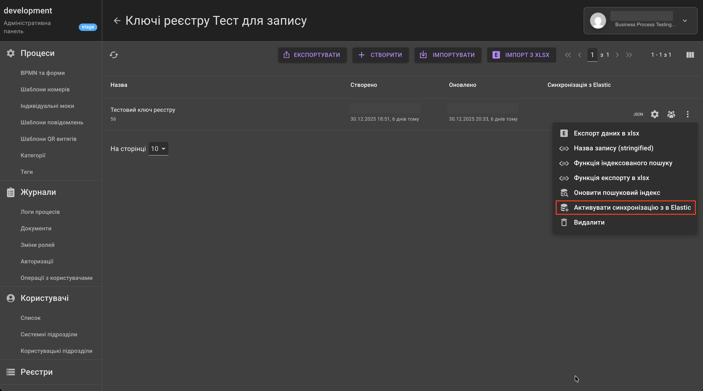
Синхронізувати з Elastic потрібно виконувати після активації, якщо змінились індексовані поля, було додано нові поля до схеми, зміна типів полів та інші зміни в схемі налаштування ключа реєстру. 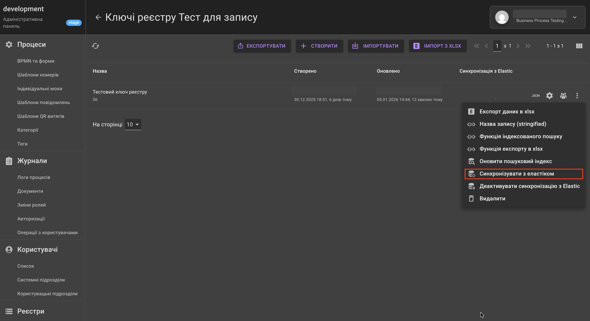
Якщо після Синхронізувати з Elastic ми отримуємо помилку, додатково в схемі ключа реєстру можна встановити параметри для створення мапінгу в індексі Elasticsearch.
Для зазначення типів даних необхідно використовувати параметр typeElastic в схемі ключа.
Приклад:
{ "type": "object", "properties": { "name": { "type": "string", "typeElastic": "double", "description": "Опис поля", "public": true } }, "required": [] }Для вимкнення функціоналу індексації через Elastic можна натиснути на кнопку Деактивувати синхронізацію з Elastic.
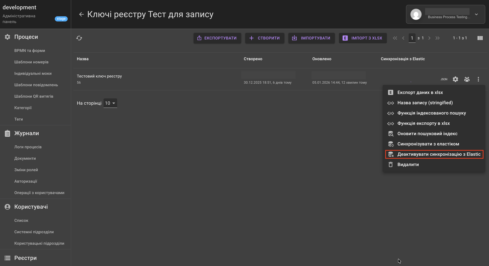
-
Видалити - дозволяє видалити схему ключа реєстру.
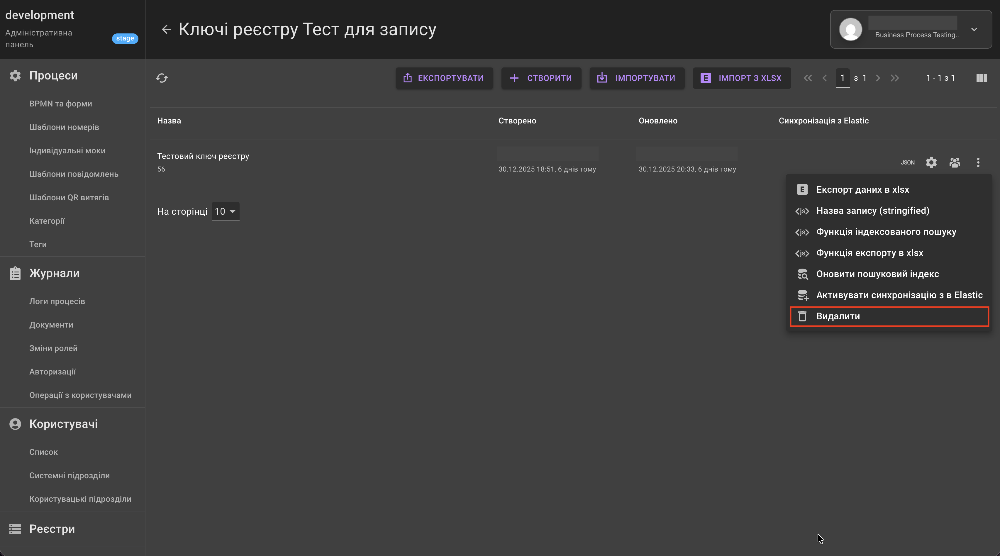
Якщо ключ реєстру вже буде заповнений даними, то без очистки реєстру даний функціонал видалення ключа буде недоступний. Щоб виконати цю дію, ключ має бути очищеним від даних.